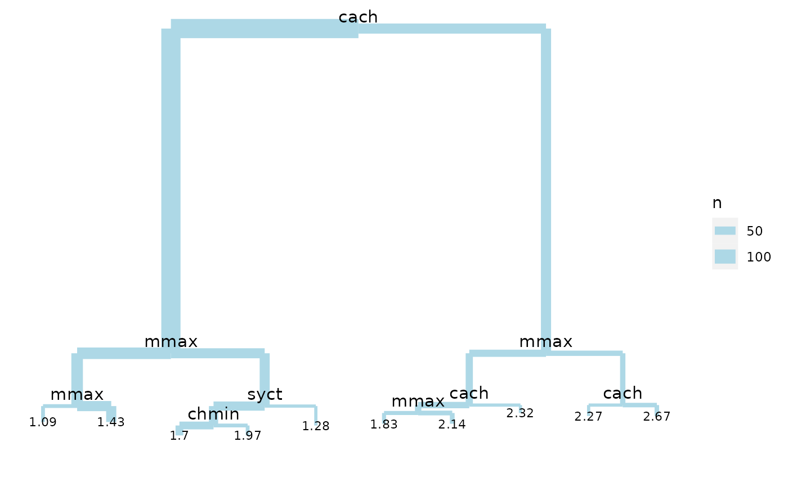

Extract data from regression tree object for plotting using ggplot.
Source:R/dendro_tree.R
dendro_data.tree.RdExtracts data to plot line segments and labels from a tree::tree() object.
This data can then be manipulated or plotted, e.g. using ggplot2::ggplot().
Usage
# S3 method for tree
dendro_data(model, type = c("proportional", "uniform"), ...)Arguments
- model
object of class "tree", e.g. the output of tree()
- type
Either
proportionaloruniform. If this partially matches "uniform", the branches are of uniform length. Otherwise they are proportional to the decrease in impurity.- ...
ignored
Value
A list of three data frames:
- segments
a data frame containing the line segment data
- labels
a data frame containing the label text data
- leaf_labels
a data frame containing the leaf label text data
See also
Other dendro_data methods:
dendro_data.rpart(),
dendro_data(),
dendrogram_data(),
rpart_labels()
Other tree functions:
get_data_tree_leaf_labels(),
tree_labels(),
tree_segments()
Examples
### Demonstrate tree
if (require(tree)) {
require(ggplot2)
require(MASS)
data(cpus, package = "MASS")
cpus.ltr <- tree(log10(perf) ~ syct + mmin + mmax + cach + chmin + chmax,
data = cpus)
tree_data <- dendro_data(cpus.ltr)
ggplot(segment(tree_data)) +
geom_segment(aes(x = x, y = y, xend = xend, yend = yend, linewidth = n),
colour = "lightblue"
) +
scale_size("n") +
geom_text(
data = label(tree_data),
aes(x = x, y = y, label = label), vjust = -0.5, size = 4
) +
geom_text(
data = leaf_label(tree_data),
aes(x = x, y = y, label = label), vjust = 0.5, size = 3
) +
theme_dendro()
}
#> Loading required package: tree
#> Loading required package: MASS
